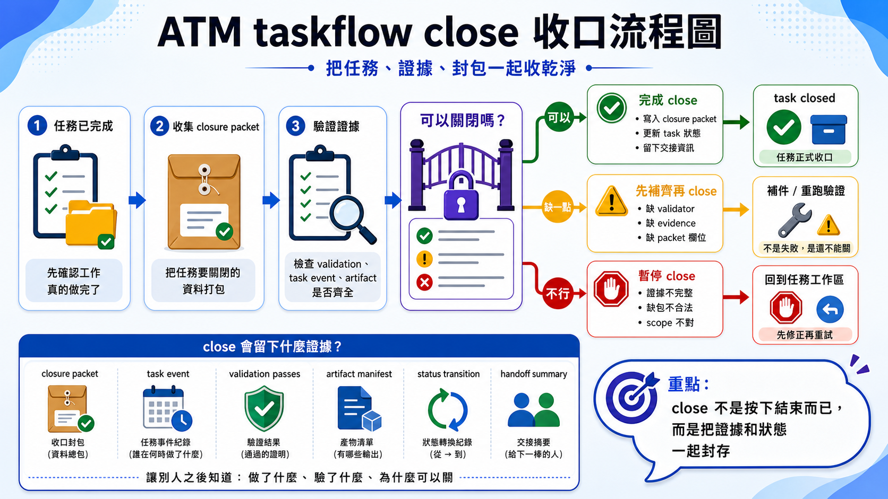

首頁 / 文章列表 / English version
ATM Governance · Visual Guide
用九張圖看懂 ATM 如何治理 AI Agent 工程鏈
當 AI 開始不只是一個助手，而是一群 Agent 一起改同一個 repo，真正困難的地方不再是「會不會寫程式」，而是「能不能穩定、可驗證、可回溯地交付」。
ATM 的核心不是叫人類記更多指令，而是讓 AI Agent 進入 repo 後，能自動學會本地 skill、讀懂任務意圖、取得邊界、驗證結果、留下證據，再把工作交接給下一個人或下一個 Agent。這八張圖可以視為 ATM 的治理地圖：從入口、健康檢查、鎖定、hook、git-head evidence，到 close 與 batch checkpoint。
先講結論：ATM 治理的不是 AI，而是 AI 的工程行為
很多人談 AI coding，會把注意力放在模型能力：哪個模型比較聰明、哪個 prompt 比較準、哪個 Agent 能一次改更多檔案。但當專案進入長期開發，問題會換一個形狀。你開始在意的是：它有沒有先理解任務？有沒有拿到合法範圍？有沒有跑驗證？失敗時能不能知道卡在哪？下一個 Agent 接手時，是否不需要重新猜前因後果？
對人類
你只描述目標，像是「修一個登入驗證 bug，並留下可 review 的 evidence」。ATM 的理想入口是讓 Agent 透過 skill 自動走治理流程，而不是要求你手背 CLI。
對 Agent
Agent 進 repo 後不應直接動手，而是先讀本地入口規則，透過 ATM next 判斷任務路徑，再按照 playbook、scope 與 validator 做事。
1. 先看全圖：ATM Governance Atlas
Figure 02
ATM governance atlas

如果只記一件事，就是 ATM 不想取代 Git、CI 或人類 review。它比較像是放在 AI Agent 和 repo 之間的治理緩衝層：Agent 想做事，先經過 route；要改檔，先有 scope；要結案，先有 evidence；要多人協作，先知道哪些工作會撞在一起。
2. 治理卡片圖盤第 1 批：把常用治理面收成操作板
Figure 03
governance cards batch 1

next、doctor、lock / claim、hook 四個最常用的治理面並排，讓人或 Agent 先知道現在應該打開哪一張卡。對第一次接觸 ATM 的讀者來說，全圖通常太大，單張流程圖又太細，這張圖盤剛好在中間。它像一個治理控制台首頁，告訴你最常需要打開的不是「所有命令」，而是「哪一類治理問題正在發生」。
例如使用者說「幫我修 landing page，順便看看 GitHub 那邊要不要同步」，成熟的 Agent 不會立刻改檔，而是先判斷：要不要先走 next 分流？repo 現在健康嗎？這次需不需要先 lock scope？最後 commit 前會被哪些 hook 攔住？這張圖盤就是把這四個高頻問題先攤在眼前。
3. next 是入口：先決定「這件事該怎麼走」
Figure 04
next entry decision

next 是 Agent 的第一個治理入口。它不只是問「下一步是什麼」，而是把使用者要求轉成可執行的 route、playbook、風險提示與必要前置條件。在 CLI-first 的世界，人類要記得先跑什麼、後跑什麼。在 skill-first 的 ATM 裡，這些應該變成 Agent 的習慣：使用者說出目標，Agent 透過 repo-local skill 進入 next，再依照回傳的 playbook 行動。這是防止 AI 自己腦補流程的第一道門。
舉例來說，當請求是「幫我補論文 landing page，並檢查 GitHub 是否也要同步」，next 不該只回一句「開始編輯」。它應該把工作拆成網站內容更新、repo 說明文件同步、是否需要社群公告準備，並指出先在哪一個 repo 動手最合理。這樣 Agent 才不會把一個跨 repo 的工作誤當成單一頁面修補。
4. doctor 是健康檢查：先知道 repo 能不能承受這次變更
Figure 05
doctor health check

doctor 不是形式檢查，它是在問：這個 repo 的治理狀態是否足以讓 Agent 安全工作？入口、integrations、runner、evidence、policy、git 狀態都可能成為早期警訊。AI 工程最怕的是錯誤太晚才出現。doctor 的價值在於把「等到 commit 才爆」的問題提前，讓 Agent 在修改之前就知道環境是否健康。對多 Agent 團隊來說，這等於把 repo 的交通號誌先亮出來。
例如 repo-local ATM integration 遺失、runner 沒同步、或 Git 工作樹裡 already 有別人的未提交變更，這些問題都不該等到 pre-commit 才被發現。doctor 像是進場前的健康站，先告訴 Agent「你現在不是不能工作，而是要先補 entry、先 build runner，或先處理髒樹狀態」。
5. lock / claim 是邊界：讓 Agent 先被任務收斂
Figure 06
lock and claim boundary

當 Agent 沒有邊界，它會很自然地把小修補擴成大整理，把 bugfix 寫成順手重構。ATM 的做法是先把任務關進合理的工作框，讓修改、驗證、證據都能對齊同一個範圍。
具體例子是：你原本只要它改 [README.md](C:/Users/User/AI-Atomic-Framework/README.md) 的新手入口，但 Agent 很可能順手去動 CLI 說明、docs、甚至 package metadata。lock / claim 的作用，就是在它下手前先講清楚「這次只碰 README 與網站文章，別把 framework 核心一起洗一遍」。
6. hook 是現場閘門：在 commit 前攔住不合規的工作
Figure 07
hook pre-commit gate

這一層是 ATM 很工程化的地方。它不是期待 Agent 自律，而是把規則放進 repo 的日常動作裡。當 AI 變多，靠提醒會累；靠 gate 才能穩。
例如 Agent 已經改完頁面，卻忘了補某個 validator、混入 scope 外檔案、或 evidence 還對不上現在的工作內容。沒有 hook 時，它會很自然地說「已完成」；有 hook 時，repo 會直接回它「不，你現在還沒準備好提交」。這種現場攔截，比事後 code review 更能降低治理漂移。
7. git-head evidence：讓證據對得上真正的 HEAD
Figure 01
git-head evidence flowchart

AI 協作裡，最容易被忽略的是「證據新鮮度」。測試曾經通過，不代表現在這個 tree 通過。ATM 把 evidence 綁回 git head，是為了讓每次 close 都能回答：這份證據到底證明了哪一份程式碼？
想像一個場景：Agent A 上午跑過驗證，下午又多改了兩個檔案，卻還想沿用早上的「已通過」結果。如果沒有 git-head evidence，這種舊證據很容易混進新提交裡。綁回 HEAD 之後，系統可以明確問它：你手上的這份證據，是不是就是現在這棵 tree 的證據？不是的話，就重跑。
8. taskflow close：不要只說完成，要能證明完成
Figure 09
taskflow close flowchart

taskflow close 把「我做完了」變成治理上的正式結案。它會檢查 scope、delivery、evidence、git-head 新鮮度與 closeout readiness，而不是只接受 Agent 的口頭回報。這一步的價值，在於把實作結果轉成下一個人、下一個 Agent、或 audit 可以真的信任的 closure。重點不是多跑一個命令，而是讓「完成」從對話句子變成有證據支撐的結案事件。
舉例來說，Agent 把 landing page 改完之後，可能會因為畫面看起來正確就說自己完成了。但 ATM 還會追問：這次實際交付的檔案是不是原本宣告的範圍、validator 是否真的對應這份 delivery、git-head evidence 是否足夠新鮮，能不能支持結案。如果這些答案不完整，close 就應該停下來，而不是默默放行。
9. batch checkpoint：多任務不是一次全吞，而是一個一個穩定前進
Figure 08
batch checkpoint flowchart

這個觀念很重要：多 Agent 並行不等於沒有節奏。batch checkpoint 讓大型工作保有節拍，降低「做很多但不知道哪個真的完成」的混亂，也讓 captain 或下一個 Agent 可以從清楚的 checkpoint 接手。
例如你手上有一批文章要修、README 要重寫、還有 landing page 要同步，如果全部混在一個大提交裡，最後很難回答「到底哪一件已經穩了」。batch checkpoint 的節奏是先把 queue head 做完、留證據、確認可交付，再往下一張走。這會慢一點，但對多 Agent 團隊來說穩很多。
把九張圖放回同一套治理視角：哪張是地圖，哪張是操作板
- 治理全圖：atlas 負責給你全局座標，先知道 ATM 在 repo 裡管的是哪些面。
- 操作圖盤：cards batch 1 把高頻治理卡收成一個首頁，方便快速進場。
- 先 route：用
next把自然語言任務轉成治理路徑。 - 再檢查：用
doctor確認 repo、runner、integration 與 evidence 狀態。 - 取得邊界：用 lock / claim 讓 Agent 的工作範圍明確化。
- 現場攔截：用 hook 在 commit 前擋住缺 scope、缺 evidence 或違規操作。
- 綁定證據：用 git-head evidence 確認驗證結果對得上目前程式碼。
- 正式結案：用 taskflow close 讓 delivery 與 evidence 變成可檢查的 closure。
- 批次前進：用 batch checkpoint 把多任務拆成可接手的節點。
這就是 ATM 治理 AI 的方式：不要求 Agent 永遠聰明，也不假設 prompt 永遠完美，而是把它的工程行為放進一條可收斂、可驗證、可回溯的鏈裡。對人類來說，這才是多 Agent 合作真正能走遠的基礎。